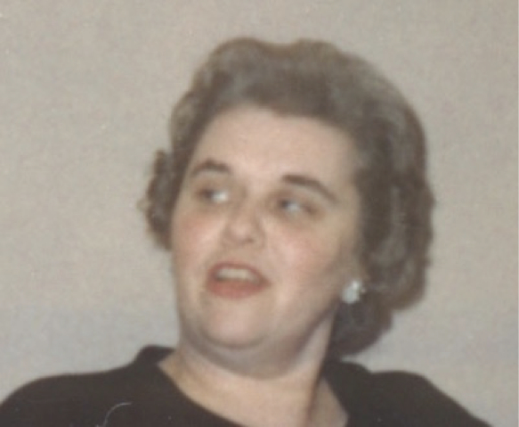

-1-MasterItem.svg)
Stories of Westminster United Church & its People / Page
189
Table
of Contents
Unit 6, begun in 1968 by Mary Leithead, was known as the ‘Young Women’s Unit.’
Mrs. Leithead graciously hosted this fledgling group in her own home for monthly
meetings during the first year until they were comfortable to meet in each other’s
homes. Thanks to Pat Miles, we have some written memories of some of the
memories of Unit 6, from Nancy Finley, Pat Roberts, Allison Kennedy and Joan
Wilton and I’d like to share those of Nancy Finley:
Nancy Finley’s memories:
“My first memory of our Unit is of the phone ringing in my kitchen and when I
answered it was Mary
Leithead from Westminster United Church (WUC). She was asking me to come out to
a Unit meeting
the next Wednesday at her house. My question to all and sundry is: how do you
say no to Mary
Leithead? I wanted to, that’s for sure. A Unit (or Circle) was something my Mother had belonged to
and was meant for her age group. I told Mary I had Meaghan (3 months old at the
time) and really
couldn’t see my way to join any group. Dave and I had been married at WUC and maybe
attended a
few Sunday services, but that was all.
Mary being Mary laughed and told me to bring Meaghan (said lots did) and that
she would ask a
lovely lady by the name of Joan Brathwaite (now Joan Wilton) to pick me up. It
was settled, I was
going.
Joan picked me up and WAS a lovely lady. I remember thinking that if the rest of
the group was this
nice, great, the evening would be fine. The evening was fun, chatting with women
in the same boat
as me. Trying to live a Christian life while raising kids and dealing with life’s adventures.
It wasn’t that long before we (as a group) decided to look after the nursery Sunday
school, thusly
meeting more of our Church members and becoming involved. I have a clear memory
of making
‘fancy’ sandwiches at Lorrie’s house for the Annual Fall Bazaar (maybe it was the spring tea) and that
skill has served me well through the years.
Westminster’
s
Women of NOte
